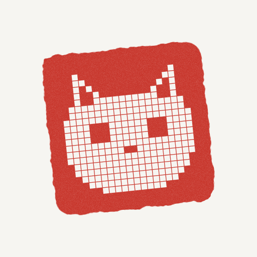
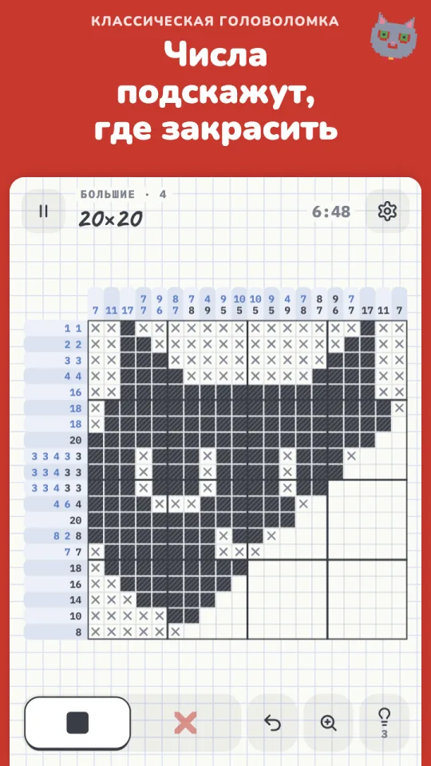
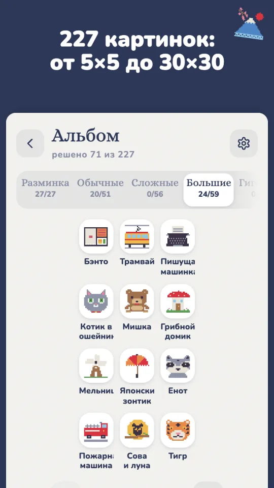
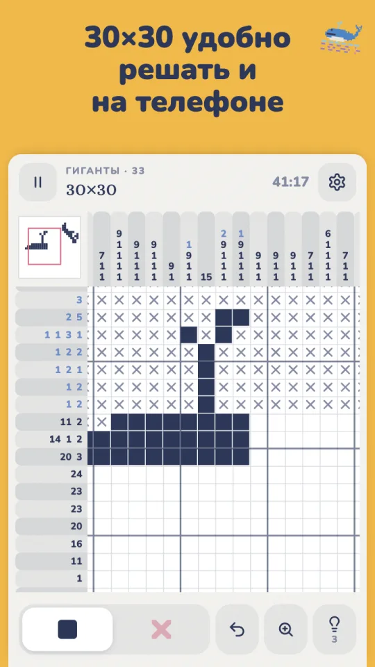
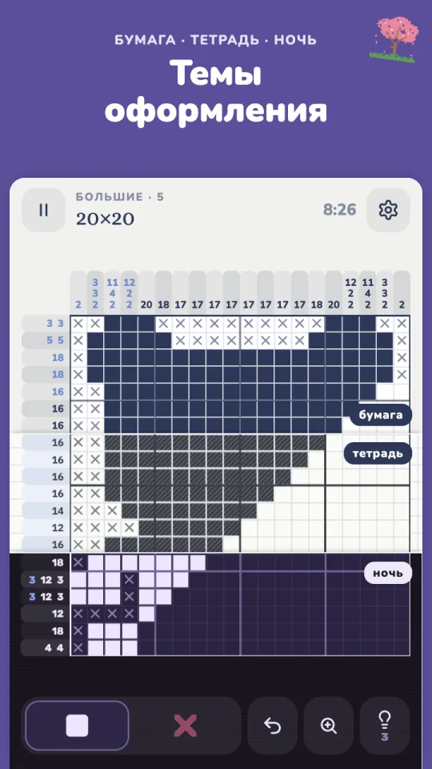

NurieЧисла подскажут, где закрасить
Японские кроссворды для телефона. По числам у строк и столбцов клетка за клеткой проявляется картинка — котик, Фудзи, паровозик или ночной город. Угадывать не придётся: каждый кроссворд решается логикой.
Попробуйте: 5 × 5
Нажимайте на клетки




Что внутри
Пять глав: от разминки 5×5 до гигантов 30×30. Внутри главы — от лёгких к сложным.
Каждый день новый, у всех один и тот же. Серия дней подряд и архив пропущенных.
Протяжка по линии, счётчик клеток, лупа и карта на больших полях, крестовина для точного курсора.
Смелые предположения можно принять или стереть. Проверка ошибок со штрафом ко времени — по желанию.
Светлая бумага, тетрадь в клетку с печатью после решения и ночной экран в пикселях.
Нарисуйте картинку в редакторе — игра сразу покажет, решается ли она логикой.